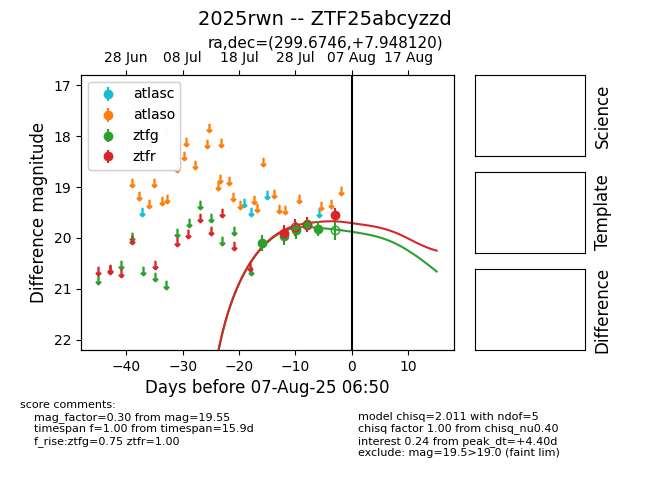

Target 2025rwn at 2025-08-07 07:30, see:
FINK: fink-portal.org/2025rwn
Lasair: lasair-ztf.lsst.ac.uk/objects/2025rwn
ALeRCE: alerce.online/object/2025rwn
TNS: wis-tns.org/object/2025rwn
YSE: ziggy.ucolick.org/yse/transient_detail/2025rwn
alt names
ZTF25abcyzzd (ztf,fink)
2025rwn (tns,yse)
coordinates:
equatorial (ra, dec) = (299.6746,+7.94812)
galactic (l, b) = (47.9137,-11.06570)
photometry
last ztfg=19.82, ztfr=19.55
5 ztfg, 2 ztfr detections
